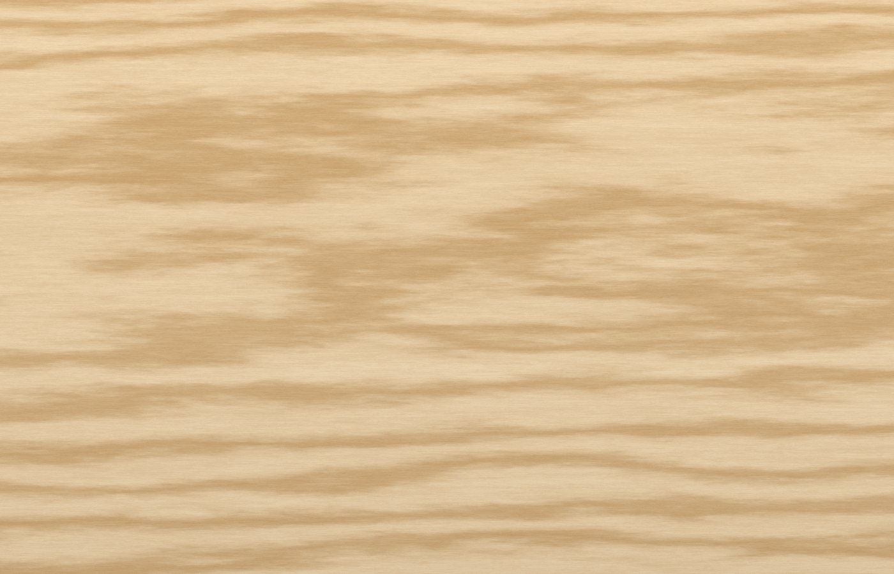
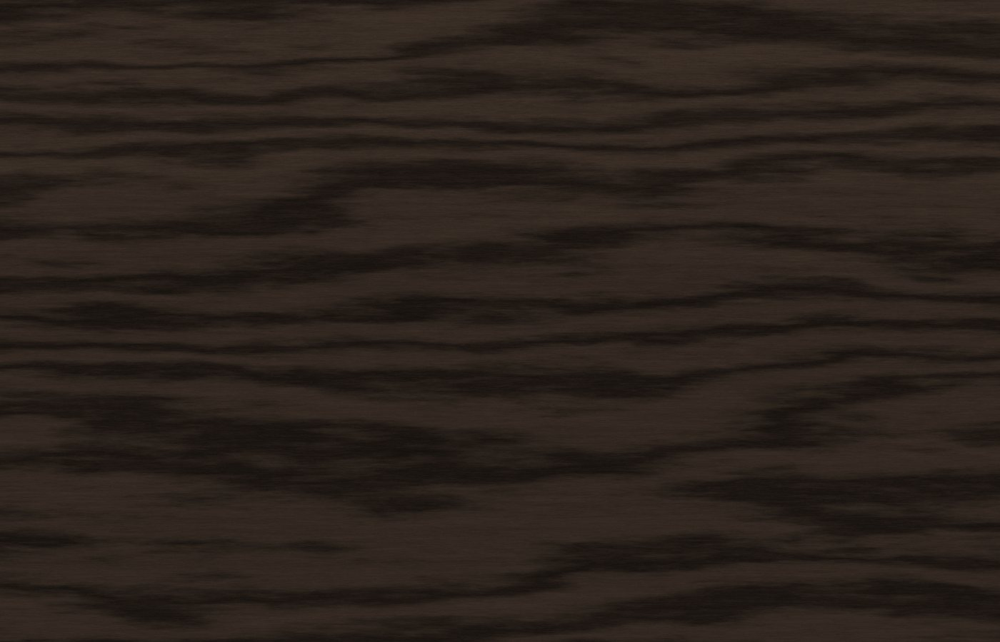

Chaque violon est dessiné, taillé, assemblé et réglé à l'atelier. Les photos ci-dessous montrent les étapes et les détails qui comptent.
| Corps | Érable massif, sculpté et creusé à la main |
|---|---|
| Touche et chevilles | Noyer huilé, ou ébène sur demande |
| Cordes | Quatre ou cinq cordes |
| Micro | Piézo sous le chevalet, sortie jack 6,35 mm |
| Poids | 520 g environ |
| Délai | Huit à dix semaines |
| Garantie | Cinq ans, réglages compris la première année |

Le choix du bois change l'allure de l'instrument, et un peu sa voix.

Clair, nerveux ; un son précis qui porte loin.

Chaud et souple ; des médiums ronds, très doux sous l'archet.

Dense, profond ; une attaque nette pour la scène.